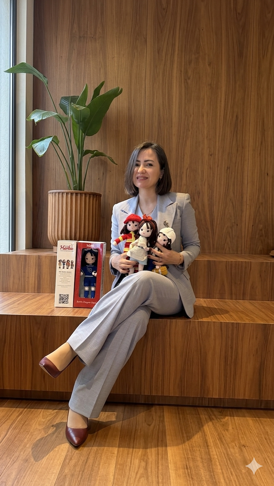

Karakter Portreleri
Temiz arka plan · 4:5Her bebek, kendi referans fotoğrafından; stüdyo ışığı ve premium ürün çekimi diliyle yeniden üretildi.

Harbie Mühendis
Beyaz baret, mavi tulum, sarı askılar.

Harbie Futbolcu
Mavi forma, bandana, örgü top.

Harbie Berber
Krem önlük, makas-tarak, kırmızı bandana.

Harbie İtfaiyeci
Kırmızı üniforma, sarı şeritler, hortum.
Amigurumi Dünyası
Diorama · 3:2Brief'teki "iplik ve amigurumi cumhuriyeti" fikri: her Harbie, tamamen örgü minyatür sahnesinde — inşaat, saha, kuaför, itfaiye.

Mühendis · İnşaat Dünyası
Örgü vinç, tuğlalar, trafik konileri.

Futbolcu · Saha Dünyası
Örgü tribün kalabalığı, kale, yeşil saha.

Berber · Salon Dünyası
Örgü berber koltuğu, ayna, şişeler.

İtfaiyeci · Kurtarma Dünyası
Örgü itfaiye aracı, merdiven, keçe alev.
Yaşam Tarzı
Çocuk + HarbieSıcak, gerçek ev ortamında çocukların Harbie'lerle bağ kurduğu anlar.

Dört yol arkadaşı, bir kucak
Çocuk; mühendis, berber, itfaiyeci ve futbolcu bebekleri kucaklıyor.

Maç keyfi
İki çocuk, futbolcu Harbie ve örgü topla oyun kuruyor.
Marka Yüzü
Nazlı Demirel · 4:5Mevcut fotoğraftaki yüz kimliği korunarak üretilen yeni kurumsal sahne.

Nazlı Demirel
Aydınlık, modern ortamda iki Harbie'yi sunuyor — aynı yüz, yeni poz.

Referans (orijinal)
Karakter tutarlılığı için kullanılan kaynak fotoğraf.
Hero / Kapak
16:9 · sol boşlukAna sayfa için; sol tarafta başlık metnine yer bırakan grup kompozisyonu.

Geleceğin Eşitlik Elçileri
Dört karakter, örgü minyatür dünyada; başlık için temiz negatif alan.